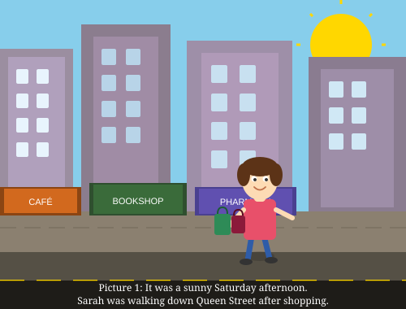
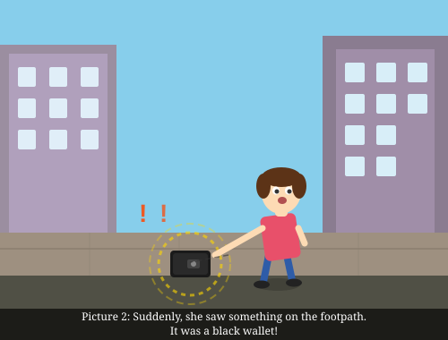
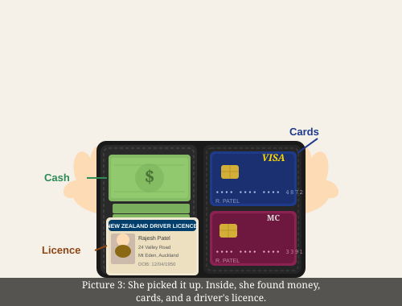
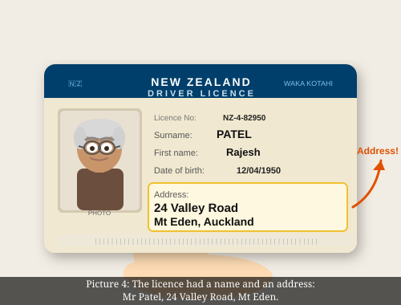
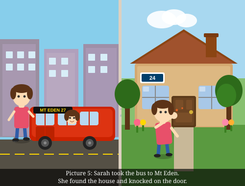
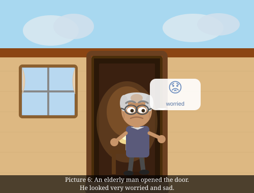
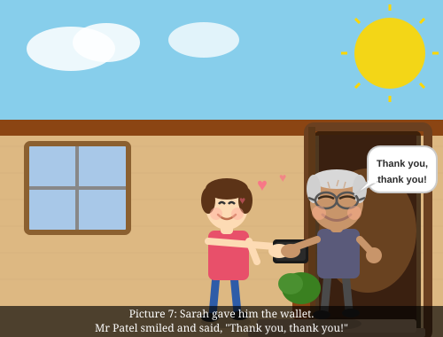
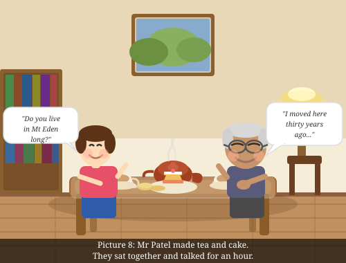

Look at the pictures and read the story.
Picture 1

Scene 1
It was a sunny Saturday afternoon. Sarah was walking down Queen Street after shopping.
Picture 2

Scene 2
Suddenly, she saw something on the footpath. It was a black wallet!
Picture 3

Scene 3
She picked it up. Inside, she found money, cards, and a driver's licence.
Picture 4

Scene 4
The licence had a name and an address: Mr Patel, 24 Valley Road, Mt Eden.
Picture 5

Scene 5
Sarah took the bus to Mt Eden. She found the house and knocked on the door.
Picture 6

Scene 6
An elderly man opened the door. He looked very worried and sad.
Picture 7

Scene 7
Sarah gave him the wallet. Mr Patel smiled and said, "Thank you, thank you!"
Picture 8

Scene 8
Mr Patel made tea and cake. They sat together and talked for an hour.